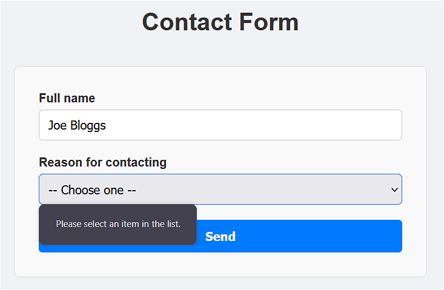
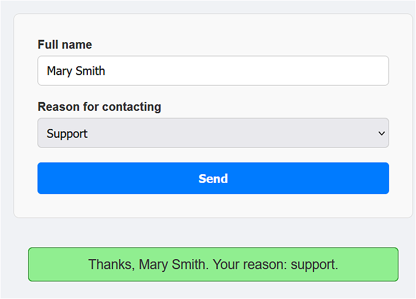
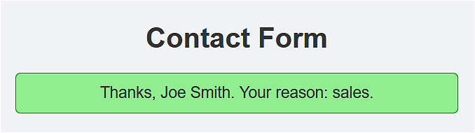
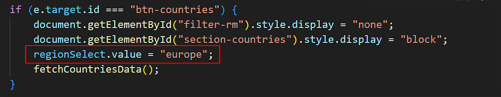

Learning Goals
At the end of this Tutorial, you will be able to:
- Use a text input with the input event to filter live API data as the user types.
- Build a <select> dropdown that triggers a Fetch API call when the user makes a selection.
For this Tutorial, in your exercises folder, create a new web page named forms-2.html.
You will also expand on the list-remote.html and list-remote.js files used in the Accessing remote APIs Tutorial.
Introduction
In the Introduction to forms Tutorial, you worked with text, email, password, and number fields, and learned how to validate them on submission and in real time. In this tutorial, you'll explore two more interactive form elements that are fundamental to modern web applications:
- A text input that filters live API results on every keystroke.
- A dropdown list that triggers a Fetch API call when the user selects an option.
Each of these connects a form element to a JavaScript event listener — the same fundamental pattern you have already practised.
Filtering with a text input
You have already used the input event to provide real-time validation feedback. This event 'fires' on every keystroke in an input field. Now, you will use this input event to fire a Fetch API request on every keystroke and display matching results dynamically.
The Rick & Morty API
Display the list-remote.html file from the Accessing remote APIs Tutorial and click the Load Rick & Morty button. You should see a list of characters appear, each with their name, status, and image.

The endpoint used by the API is as follows:
https://rickandmortyapi.com/api/characterThe Rick & Morty API supports searching by character via a name query string parameter. For example, the URL below returns all characters whose name contains "rick":
https://rickandmortyapi.com/api/character/?name=rickIn the address bar of your browser, test the following two URLs to see the results:
https://rickandmortyapi.com/api/character/?name=rickhttps://rickandmortyapi.com/api/character/?name=mortyThe above URLs return matching characters. Now try the URL below:
https://rickandmortyapi.com/api/character/?name=zzzThe above returns an error object because no characters match "zzz".
{"error":"There is nothing here"}Your code needs to check for this and handle it gracefully, rather than crashing when it tries to loop through results that don't exist.
First, add this CSS to the <head> of your list-remote.html file:
section#filter-rm {
max-width: 500px;
margin: 40px auto;
padding: 22px 32px;
background-color: #f9f9f9;
border: 1px solid #ddd;
border-radius: 8px;
display:none;
}
.form-group {
display: flex;
flex-direction: column;
margin-bottom: 20px;
}
.form-group label {
font-weight: bold;
margin-bottom: 6px;
color: #333;
}
.form-group input[type="text"] {
padding: 10px 12px;
font-size: 1rem;
border: 1px solid #ccc;
border-radius: 5px;
outline: none;
max-width: 320px;
transition: border-color 0.2s ease;
}
.form-group input[type="text"]:focus {
border-color: #007BFF;
}
.no-results {
color: #6c757d;
font-style: italic;
margin-top: 12px;
}This hides the Rick & Morty filter by default.
Now, let's add a text input that lets the user search for any character by name.
In your list-remote.html file, add the following HTML under the <h1> heading:
<section id="filter-rm">
<h2>Filter Rick & Morty characters</h2>
<div class="form-group">
<label for="characterSearch">Search characters:</label>
<input type="text" id="characterSearch" placeholder="e.g., Rick">
</div>
</section>And in list-remote.js, update the event listener for the button-container to hide the search option so that it only displays when the Load Rick & Morty button is clicked.
// Event listener on the parent container
document.getElementById("button-container").addEventListener("click", function(e) {
if (e.target.id === "btn-countries") {
document.getElementById("filter-rm").style.display = "none";
fetchCountriesData();
}
else if (e.target.id === "btn-users") {
fetchUsersData();
document.getElementById("filter-rm").style.display = "none";
}
else if (e.target.id === "btn-rm") {
// Clears the search field
document.getElementById("characterSearch").value = "";
// Clear any existing data and show the filter section
document.getElementById("remote-data-container").innerHTML = "";
// loads all characters
fetchRMData();
// Show the filter
document.getElementById("filter-rm").style.display = "block";
}
});Adding the filter logic
Your JavaScript file already has two functions to process the Rick & Morty data.
- Fetch function: This is named fetchRMData() or similar.
- Display function: This is named displayRMData() or similar.
Paste the following into your list-remote.js file. Notice how the input event connects directly to the Fetch API call:
// -------------------------------------------------------
// Filter Rick & Morty characters by name
// -------------------------------------------------------
const characterSearch = document.getElementById("characterSearch");
// Fire a fetch on every keystroke
characterSearch.addEventListener("input", () => {
const searchTerm = characterSearch.value.trim();
// Don't fetch if the field is empty
if (searchTerm === "") {
const container = document.getElementById("remote-data-container");
container.innerHTML = "";
return;
}
fetchRMData(searchTerm);
});Replace your current fetch function with the following:
async function fetchRMData(name = "") {
try {
const url = name
// name not an empty string (user entered name in search box)
? `https://rickandmortyapi.com/api/character/?name=${name}`
// name is an empty string (no name entered in search box)
: `https://rickandmortyapi.com/api/character`;
const response = await fetch(url);
const data = await response.json();
if (data.error) {
const container = document.getElementById("remote-data-container");
container.innerHTML = `No characters found matching "${name}".
`;
return;
}
displayRMData(data.results);
} catch (error) {
const container = document.getElementById("remote-data-container");
container.innerHTML = `⚠️ Could not load data. Please try again.
`;
console.error(error);
}
}Save your files and test the search box. As you type, matching characters should appear immediately.
Note the following:
- Because you are using the input event, the Fetch API fires on every keystroke, but only if the field is not empty.
- Your fetchRMData() function now includes a default name parameter, which will have a default value of an empty string. This means your fetch function can handle both cases: fetching all characters or fetching characters by name.
- If name is not an empty string, the fetch request URL ends with ?name=.... Otherwise, the fetch URL returns the default character list.
- The data.error check handles the case where no characters match — without this, the code would crash trying to call .forEach() on undefined.
Let's add one more feature that deals with situations where users enter disallowed characters in the search field. Update the ternary operator in your fetchRMData() function as follows:
const url = name
// name not an empty string (user entered name in search box)
? `https://rickandmortyapi.com/api/character/?name=${encodeURIComponent(name)}`
// name is an empty string (no name entered in search box)
: `https://rickandmortyapi.com/api/character`;A user typing "Rick & Morty" would break the URL if we didn't use encodeURIComponent(). Use this anytime you want a user input to become part of a URL.
Dropdown lists and the select element
A dropdown list — created with the <select> element — is ideal when you want to offer the user a fixed set of choices.
Add the following HTML to your forms-2.html web page:
<h1>Contact Form</h1>
<form id="contactForm" class="label-above">
<div class="form-group">
<label for="fullName">Full name</label>
<input type="text" id="fullName" name="fullName" placeholder="e.g. Alex Murphy" required>
</div>
<div class="form-group">
<label for="reason">Reason for contacting</label>
<select id="reason" name="reason" required>
<option value="">-- Choose one --</option>
<option value="support">Support</option>
<option value="sales">Sales</option>
<option value="feedback">Feedback</option>
</select>
</div>
<button type="submit">Send</button>
</form>
<p id="output"></p>Note the following points:
- The first option in the dropdown list has an empty value of "". This acts as a prompt, telling the user to make a choice. If you add a required attribute to the <select> element, the web browser will check for this empty value and display a message if no selection is made. 
- JavaScript captures the dropdown selection using the .value property, similar to how it works on an <input> element.
Now, at the bottom of forms-2.html, inside a <script> tag, add the following JavaScript:
const contactForm = document.getElementById("contactForm");
const output = document.getElementById("output");
contactForm.addEventListener("submit", e => {
// prevents the default form submission behaviour (page reload)
e.preventDefault();
// Gets the values from the form
const fullName = document.getElementById("fullName").value.trim();
const reason = document.getElementById("reason").value;
// Unhides the output element and displays the message
output.style.display = "block";
output.innerText = `Thanks, ${fullName}. Your reason: ${reason}.`;
});After you submit the form, the output message will be displayed below the form.
To avoid the result of users pressing Submit multiple times with the same data, you could hide the form after submission. Add this new line at the end of the submit event listener.
contactForm.style.display = "none";Test the form again and verify that, after submission, you see only a message.
However, when you reload the page, you can see that your previous input and selection is still there. To correct this, add a new event listener for the web page load event.
// ✅ Reset the form every time the page loads/reloads
window.addEventListener("load", () => {
contactForm.reset();
output.style.display = "none";
output.innerText = "";
});Dropdown lists and default values
For dropdown lists, it’s common to start with a prompt option that isn’t a real choice:
<option value="">-- Please select one --</option>Combined with required, the browser will block submission if they leave it on the empty option. This forces the user to actively choose.
If you do want a real default (pre-selected), just make the first real option selected by default or use the selected attribute:
<option value="support" selected>Support</option>The select element and the Countries API
In this next example we will use the <select> form element along with a new 'real-time' event handler called change to fire a Fetch API call whenever a user selects from a dropdown list.
Here is a quick summary of the most common 'real-time' form events:
blur |
Good for 'validate on exit' checks: tidying up formatting (trim spaces), and showing error messages only after the user is done with the field. |
input |
Commonly used for live validation, character counts, and search-as-you-type. Doesn’t wait for the user to 'finish.' |
change |
For a text input, this fires when the user commits a change. For the select element, it fires when a new option is selected. Good for 'validate on change' checks. |
Open your list-remote.html web page from the Accessing remote APIs Tutorial.
As a first step, add the following CSS to the <head> of list-remote.html:
section#section-countries {
max-width: 500px;
margin: 40px auto;
padding: 22px 32px;
background-color: #f9f9f9;
border: 1px solid #ddd;
border-radius: 8px;
display:none;
}
.form-group select {
padding: 10px 12px;
font-size: 1rem;
border: 1px solid #ccc;
border-radius: 5px;
outline: none;
max-width: 320px;
transition: border-color 0.2s ease;
}
.form-group select:focus {
border-color: #007BFF;
}Add the following HTML to your list-remote.html, above the Rick & Morty search section.
<section id="section-countries">
<h2>Countries by region</h2>
<div class="form-group">
<label for="regionSelect">Select a region:</label>
<select id="regionSelect">
<option value="africa">Africa</option>
<option value="americas">Americas</option>
<option value="asia">Asia</option>
<option value="europe" selected>Europe</option>
<option value="oceania">Oceania</option>
</select>
</div>
</section>Note that the europe option is selected by default. The Countries API demands that one region must be selected.
In list-remote.js, update your event listeners as follows.
// Event listener on the parent container
document.getElementById("button-container").addEventListener("click", function(e) {
if (e.target.id === "btn-countries") {
document.getElementById("filter-rm").style.display = "none";
document.getElementById("section-countries").style.display = "block";
fetchCountriesData();
}
else if (e.target.id === "btn-users") {
fetchUsersData();
document.getElementById("filter-rm").style.display = "none";
document.getElementById("section-countries").style.display = "none";
}
else if (e.target.id === "btn-rm") {
// Clears the search field
document.getElementById("characterSearch").value = "";
// Clear any existing data and show the filter section
document.getElementById("remote-data-container").innerHTML = "";
// loads all characters
fetchRMData();
// Show the filter
document.getElementById("filter-rm").style.display = "block";
document.getElementById("section-countries").style.display = "none";
}
});This will hide the countries dropdown list section - except when the Load countries button is clicked.
Using the regions endpoint and the change event
The REST Countries API supports a /region/ endpoint that accepts any of the five region names as a URL parameter. Here are two examples:
https://restcountries.com/v3.1/region/europe
https://restcountries.com/v3.1/region/africaBecause the <option> values in your HTML exactly match the region names the API expects, you can build the full URL simply by appending the selected value to the base endpoint.
We will use the change event because it fires immediately when a new option is selected from a <select> dropdown list.
Add this new event listener to your list-remote.js file:
// -------------------------------------------------------
// Countries by region dropdown
// -------------------------------------------------------
const regionSelect = document.getElementById("regionSelect");
regionSelect.addEventListener("change", () => {
const selectedRegion = regionSelect.value;
fetchCountriesData(selectedRegion);
});Replace the current fetch countries function with the updated version below:
async function fetchCountriesData(region="europe") {
const container = document.getElementById("remote-data-container");
container.innerHTML = "<p>Loading...</p>";
try {
const response = await fetch(`https://restcountries.com/v3.1/region/${region}`);
if (!response.ok) {
throw new Error(`Network error: ${response.status}`);
}
const data = await response.json();
displayCountriesData(data);
} catch (error) {
container.innerHTML = `<p class="no-results">⚠️ Could not load countries. Please try again.</p>`;
console.error(error);
}
}Note that a "Loading..." message is shown immediately when a region is selected, before the data arrives. This gives the user immediate feedback that something is happening.
Make these two updates to your display countries function:
- For the Population data, update the line as shown below to make the output more readable.
Population: ${country.population.toLocaleString()} - For the Capital city, update the line as shown below to handle cases where there is no capital. This ternary operator will handle such data issues gracefully rather than crashing the code.
Capital: ${country.capital ? country.capital[0] : "N/A"}
Add this page load event to reset the dropdown list to its default selection of Europe when the page loads.
// Load default region on page load
window.addEventListener("load", () => {
// Force default selection on reload
regionSelect.value = "europe";
});Finally, add this same reset line to the relevant button click listener.
Test your dropdown list and verify it works correctly for all regions.
Try it yourself
The Live Character Count
Add a <span id="charCount"></span> under the Rick & Morty search box. Use the input input event to update this span element with the number of characters currently typed (e.g., "Characters: 5").
The Status Filter
The Rick & Morty API also supports filtering by status:
https://rickandmortyapi.com/api/character/?status=alive.
Add a <select> dropdown next to the search box with options: All, Alive, Dead, Unknown.
When the user changes the dropdown, fetch and display only characters matching that status.
The "Debounce" Feature
Right now, if a user types "Morty" quickly, the code fires 5 separate API requests in under a second.
Use a setTimeout to ensure the API call only fires if the user stops typing for 500ms.
More learning resources
Tutorial Quiz
Tutorial Podcast
Sample AI prompts
What is the difference between the input, blur and change events in JavaScript? When would I use each one?What does encodeURIComponent() do in JavaScript, and what problems can occur if I include raw user input directly in a URL?"What is the CSS accent-color property and which form elements does it affect?What is debouncing in JavaScript, and how do I use setTimeout and clearTimeout to debounce an input event listener?